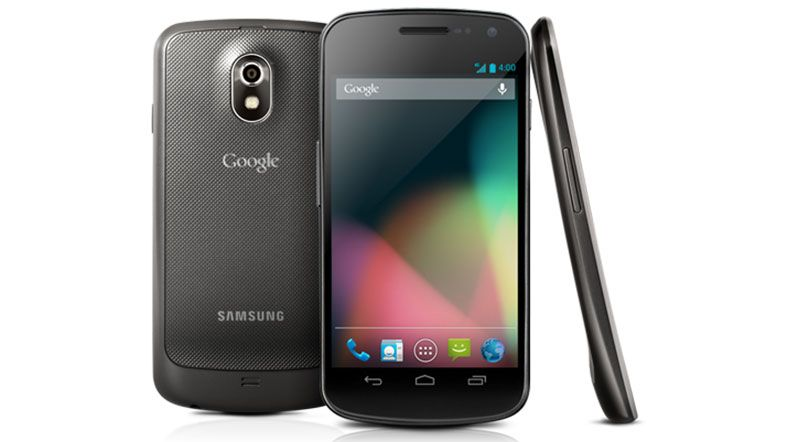
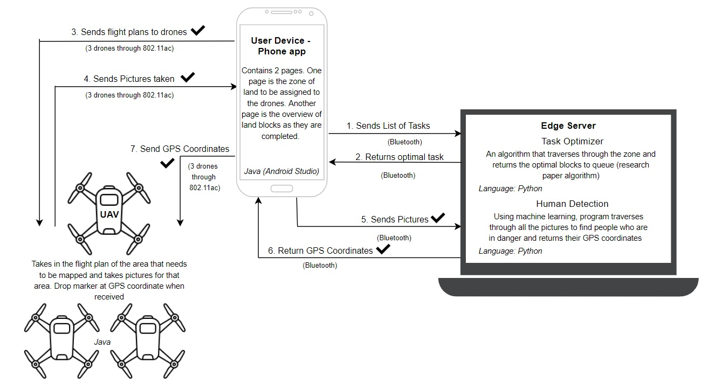

The Start
My eyes gleefully watch as the 2000+ piece LEGO set of the NASA Atlantis Space Shuttle is scanned and bagged at Toys R Us. My mom pulls the bag down from the counter and I instantly grab it. I hug the massive box around my chest to carry it to the car while I wobble back and forth, the box hitting my knees. Once I get home I run to the basement, pour out all the pieces, and start sorting them out based off their color and size and function. In a matter of hours, after burrowing my head in the instruction pamphlet and following each step precisely, I smile in amazement as the shuttle finally comes together getting a warm sense of satisfaction.
Ever since I was young, I loved creating. LEGO sets were the perfect starting point for this skill to grow. My parents, one an industrial engineer and the other a software engineer, have always had that methodological, processed way of thinking that is common with engineers. From an early age my parents raised me to think in a similar way. When I was ten years old and wanted to buy my own trumpet for school band, instead of just jut buying one for me, my dad wanted me to research all the trumpets on sale and recommend to him which one he should buy for me based off of his proposed budget, how long I expected to use it, my talent level, and a dozen other factors. To do this well, I learned key factors that differentiated each trumpet from one another on the market, and how to weigh what is important for me. I quickly learned the practice of understanding value proposition, decision-making, and compromising.
Technology
Like every teen in my generation, my next big purchase was a cellphone at the age of 13. Once again, my dad told me to just research what I wanted based off a budget. This product, however, held more importance in my heart. I was always an introvert, so the factors that I considered valuable were not necessarily having the best text messaging service, but instead the underlying technology and its capabilities, and the potential for creation with my new cellphone. While I was scouring the internet for technical specifications for phones on the market in 2012, I quickly landed on the site YouTube. I was blown away by the amount of creative content that existed on this platform, and how easy it was to learn about a topic by getting buried deeper and deeper into rabbit holes of suggested videos. I started following some creators that would review new technology products. I saw how they break down all aspects of a cellphone by its camera, internal processing power, storage space, user interface, and many more features, and seeing how they compare each device by that list of features and how it impacts every user experience. I loved this way of breaking down a product, since that is exactly what I did when I was young. I loved how methodological and clear it was, and I am always able to decide an overall personal winner based off these factors and my own biases determined by use-cases I experience daily.

Samsung Galaxy Nexus
I ended up choosing to get one of the first Android phones that was made by Google directly, and I was suddenly introduced to another creation community – app development. I consistently asked myself how I could use my phone to optimize the processes of my life, saving time and making everyday tedious tasks automated and faster. Within two years, I made logic flows in my phone to automate tasks to a similar capability of Siri, being able to text and call people by speaking to my phone, and turn on and off certain system settings like ringer volume and Bluetooth by triggering classes such as “School Mode” and “Home Mode”. Each time I completed a personal project, I got a strangely warm sense of satisfaction, just like when I finished building my LEGO sets. Except this was different – there was much less structure to the way to solve each problem – there was no instruction set written out to follow to complete. Instead, this process was more about problem-solving, following one manual, troubleshooting when I run into issues by reading forums on how others fixed bugs, and continuing until I reached my desired product. That warm sense of satisfaction was felt stronger because, in the end, the product was uniquely my own, with my own creativity infused in the structure.
Computers
When I was 15 years old, right before starting high school, the last big product that impacted my decision to focus on engineering also impacted my decision on which specialty to choose – my computer. For me, to understand anything, I want to be able to understand everything that goes into making it work. So, when I started researching for a computer, I first wanted to learn every part of a computer and how it impacts the overall performance of the machine. Then, I tried to find the best performance/dollar computer I could buy based off my budget. Once again, I turned to YouTube and came across an incredible community of people that build their own computers. I quickly started learning about the specifications of central processing units, the innovations in RAM during that time, the benefits of a discrete graphics card, what every part on a motherboard was used for, watched experiments on best ways to cool your computer based on a multitude of factors, and much more technical information. I started keeping up to date with the newest products from Intel, Nvidia, Corsair, and more. I used to come back from high school, complete my homework assignments, and then binge watch hours of YouTube videos about technology and trends, learning as much as I could. Once got the desktop computer that I wanted to buy, I started learning even more my experimenting with my own hands – from tinkering with my BIOS settings, to benchmarking my computer and overclocking, I started learning more and more about how the hardware of the computer interacts with the programs and software that runs on the computer.
My expertise shined when, before the summer I started attending Rutgers, my close friend asked me to build his computer. Almost like adult LEGO, I remember excitingly unboxing all the parts he bought, enjoying the smells of the weird metallic freshness. As we installed each part, we had avid conversations about technology and latest innovations in different fields, and something in me clicked – I loved being a part of this community and being around like-minded people with similar interests. In a matter of a few hours, after we plugged in all the last of the cables from the power supply to the motherboard, hard disk drive, solid state disk, and graphics card, and after cramming all the cables into the small Micro-ATX case, we pressed the power button for the first time and got that familiar rush of satisfaction as we saw the initial BIOS screen load successfully, letting us access all the fruits of our labor. I realized this is the feeling I want to seek through my education, and eventually through my career – I want to build solutions for problems with technology.
Society
At Rutgers University, I pursued my Bachelor of Science in Electrical and Computer Engineering, with minors in Computer Science, Political Science, and Critical Intelligence Studies. Throughout my formal education, I learned technical skills like how to code efficient algorithms and how streams of bytes interact with the computer, but my multidisciplinary education also taught me how to view the world from a few steps back. Through the classes for my minors and through some of the problems my technical classes addressed, I was exposed to many more challenges that expanded past just what I encountered, but also the struggles of different communities and groups. I engaged in conversations every week about current events occurring around the world and adversities that people face. Additionally, each week I practiced more and more of my technical skills. This collaboration between technical and liberal education made my mind race with thoughts on how technology could make lives of those we learned about easier. My mission statement after my education is now to create a better world by building solutions for problems with technology. I hope to consistently strive for that warm sense of satisfaction as I see how I can do my part in giving back to the people of our world.

Senior Design Project
Since I was young, I knew I wanted to work with technology, building products that made life easier. Rutgers University exposed me to a life outside of my own, and I set on desiring to build technological solutions for problems larger than myself. Throughout college, I worked on projects big and small, culminating with my senior design project being a Multi-UAV Human Reconnaissance for disaster areas. These projects all gave me that familiar warm sense of satisfaction that I continue to seek. As I look towards my future, I will be joining Capital One as an Associate Product Manager in August 2020. My senior design project was a great stepping stone into this role, as I essentially went through all the stages of a product launch, from brainstorming and product ideation, to developing and troubleshooting, to finally releasing the minimum viable product. I cannot wait to use these new experiences and skills I have learned to become a great Product Manager and impact more lives.

Sagar Shah
I am a recent Computer Engineering graduate of Rutgers University Honors College in New Brunswick, New Jersey, looking forward to gaining more experience in the technology industry with Capital One as an Associate Product Manager in New York City. I thrive in challenging environments and enjoy engaging with complex issues through problem solving. I spend my time outside of work photographing, traveling, working out, cooking, and listening to music. My goal is to positively impact society with innovative technological solutions for problems big and small.